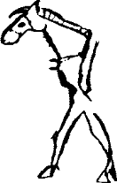

On bir aydır yoldayız kulan! Ben Tengere Tardu Tigin, tam bir yol yoksulu oldum. Sen bilmezsin ama, bu sürenin ilk on buçuk ayı Azman atımın sırtında olmak üzere, dört ayrı mevsimin ve yedi iklimin içinden geçtim, bütün bir bozkırı geçtim. Seninle karşılaşmadan beş gün önce de Azman’ı ağaçtan kızağımda karlar üzerinde ben taşımaya başladım. Bir kez değil, tam beş kez sürçtü bizim Azman. Sonuncusu da ne sürçüştü! Sürçüş değil düşüştü. Ne yapaydım kulan? Ağaçtan kızak dedim de, Batı Bozkırı’nın bu uçsuz bucaksız yöresinde ağaç bulmamı da yine atalarıma borçluyum.
Sevgili Azman ile son akşamımızdı. Mart sonu, neredeyse nisan başları olmasına karşın dehşetli bir tipi, korkunç bir boran vardı. Gözlerimiz karık olmuştu, hiçbir şey göremiyorduk. İlerlemek ne söz, ayakta duramıyorduk. Ben Azman’dan inmiştim. Azman’ın bir nalı düşmüş, nalsız ayağının yumuşak orta derisine taşlar batmış; sürekli topallıyordu. Çapanımdan koparıp ayağına sardığım bez eriyip gitmiş, yenisini bulamıyordum. Biz bu halde iken tipi başladı. Bir saat sonra biraz geri aldı, önümüzde bir an görünüp hemen yiten hafif bir kızıllık, Batı Bozkırı’nın sığınacak tek bir deliği, tek bir taş dibi, tek bir ağacı olmayan ve artık bir kar çölü halini alan bu yöresinde, yürümeye savaştık. Yular gerildi, Azman düştü, kaldırdım. Korkunç bir gürültü koptu. Yular birden daha çok gerildi, Azman ikinci kez düştü, ben de düştüm. Kalktığım zaman Azman yoktu. Yer yarılmış içine girmişti sanki. İyice bakınca Azman’ın gerçekten de yarılan yerin içine girdiğini gördüm. Düştüğü çukurdan yoksulumun yalnızca kulakları görünüyor, ürküp korktuğu için iyice dışarı uğrayan patlak sarı gözlerinde, batan güneşin kızıllığı ve sonsuz bir aklık bana geri dönüyordu.
Daha dikkatli bakınca Azman’ın bir mezara bastığını anladım. Yılların etkisiyle direncini yitiren ve üzerindeki toprak yığınının ağırlığını artık taşıyamayan ağaçlardan birkaç tanesi kırılmış, Azman mezarın içine düşmüştü. Çıkmak için debelendikçe kafasını her iki yandaki ağaçlara vurup duruyor, kafasından tok, tuhaf sesler çıkıyor, mezarın içine karla karışık topraklar doluyordu. Tam üç yol umutsuzca yulara asıldım. Hiçbir kıpırdama olmadı. Bu kez bileğime dolayarak kısaca tuttuğum yulara yalnızca sol elimle ve başka bir amaçla asıldım. Azman’ın sevgili başı biraz yukarı kalktı, boynu yay gibi gerildi, ben o gergin yaya bıçağımı bir kez çaldım, serçe parmağım kalınlığında bir kan oluğu fışkırdı, mezarın bir kulaç ötesinden başlayarak karları kızıla boyadı, sonra yavaş yavaş söndü ve mezara kadar geri dönerek başladığı yerde durdu. Azman’ımın açık kalan camlaşmış gözlerinde güneşin battığını gördükten sonra, hızla işe koyuldum.
Azman’ın yanındaki yöresindeki ağaçları kaldırdım. Mezarın üzerini neredeyse bütünüyle açtım. Kendimi içeri bıraktım. Bir köşeye yığılıp kalan Azman bu çukurun neredeyse yarısını kaplıyordu. O gece canım ne yemek istedi ne de başka bir şey yapmak. Küçük bir oda büyüklüğündeki çukurun diğer köşesine de ben çekildim. Okumu yayımı elime aldım, çapanıma sarındım, sırtımı toprak duvara dayadım, oturdum. Dışarda tipi durmuştu. Pırıl pırıl gökte beyaza yakın sarılıkta tekerlek gibi bir dolunay vardı. Ben Tengere Tardu Tigin, Azman ile güneşi yakalama oyunlarımızı andım, o gece o gukurun dibinde kana kana ağladım.
Gece yarısında beklediğim konuklar geldi. Kan kokusunu yalnızca ben alacak değildim ya... Gelenlerden biri, Azman’ın kar üstünde artık, büzülmüş, pıhtılaşmış olması gereken kanını lap lap sesleri çıkararak yalamaya başladı. Daha gözü kara biri çukurun kenarına kadar geldi, ay gözlerinde çakmak çakmak yansıdı. Yayımı doğrulttum ve parlayarak yerini belli eden bu hedefe boşalttım. Sert bir ses duyuldu. Kurt olduğu yere yıkıldı. Çırpınırken yüzüme buz gibi toprak ve kar parçaları sıçrattı. Sonra bir anda, çırpınacak tüm bacaklarını yitirdi. Bozkırda sürünün içinde kurt olmak da güçtür. Yoldaşları kurdu göz açıp kapayıncaya kadar yırtıverdiler.
Sıranın bana geleceğini biliyordum. Bu yüzden yayıma çayırda turgay kuşu vurmaya yarayan ince kuş oklarından birini koydum. Hırıltılardan nerede olduklarını kestirdiğim kurt sürüsünün tepesine düşecek şekilde yayımı boşluğa, havaya boşalttım. O daha düşmeden İkincisini gönderdim, ikisinden biri bir kurdun üstüne düştü. Saplandı mı bilmiyorum ama, kurt kesik, boğuk bir çığlık attı. Kuş oklarımdan üç tane daha harcayarak iki kurt daha vurdum. Biri neredeyse insanımsı bir çığlık kopardı. Yaralı kurtlar bu yaralarını umursamadan, ilk düşen yoldaşlarını yırtmaya devam ettiler. Benim amacım da onları öldürmek değildi zaten. Beş dakika sonra, taze kan kokusu almış aç sürü, oldukça tok olan yaralı yoldaşlarına saldırdı. Dışarıda korkunç bir boğuşma başladı. Yaralı kurtlar da başka kurtları ısırarak yaralanmalarına neden oldular. Ee, ne demişler, iti ite, kurdu kurda kırdıracaksın! Hırıltılar mezarımızdan uzaklaşırken korka korka başımı dışarı çıkardım. Ay ışığı altındaki görkemli gecede zorlu bir vuruşma yaşanıyor, gölgeler ak bir halı imişçesine acunu örten kar üstünde bir uzuyor, bir kısalıyordu. Kurt sürüsü dişini tırnağına takmış, kendiyle ve ayaklarının üzerinde durmaya çabalayan daha iri başka bir şeyle savaşıyor, kan sızdıran bir öbek halinde, neredeyse yuvarlana yuvarlana mezardan uzaklaşıyordu. Yukarı çıktım. En çürüklerinden iki ağaç alarak aşağı indim. Onları kırıp hazırladım. Fakat kavım ıslandığı için ateşi yakamadım. Islak kavı koltuğumun altına sıkıştırarak o gecenin ayazında, o mezarın dibinde, Azman’a imrenerek uyumaya çalıştım.
Güneşin ilk ışıkları ile birlikte doğruldum. Önce, her tan yeri ağarırken Bozkırın uzun otlarını keskin dişleriyle tırpanlayan tarpanıma son kez baktım. Sonra keskin bıçağımla ön ve arka ayakları arasındaki, yani gövdesindeki deriyi kestim, yüzdüm çıkardım. Uzunca, çadır yolluğu gibi bir deri parçası aldım. Vücudunun ön ve arka taraflarında hâlâ sarı donunu üstünde tutan, bütün gövdesi ise beyaz ve kızıl soyulmuş duran Azman’ıma acıyarak baktım. Yitirecek anım olmadığı için işe koyuldum. Mezarın gece büzülüp oturduğum köşesine, soyduğum deriyi yaydım. Butlarından başlayarak Azman’ı küçülttüm. Bu Tanrının kırında paça çorbası yapacak durumum olmadığı için, ayaklarını eklem yerlerinden kesip, çukurun dışına fırlattım. Azman’ın dört bacağını ve çıkarabildiğim kadar eti derinin üzerine yığdım. Sonra yüreğini, ak ve kara ciğerlerini, dalağını, bağrını, midesini çıkardım. Bunları çukurun kenarına koydum. Kuyruksokumuma kadar ter, dirseklerime kadar kan içinde kalmıştım.
En sağlam ağaçlardan üçünü birbirine çatarak küçük bir çadır iskeleti yaptım. Azman’ın midesini ters çevirdim, içindekileri dışarı döktüm. Tersyüz ettiğim midenin içine, çıkan bütün sakatatı ve kuşbaşı doğradığım etleri doldurabildiğim kadar doldurdum. Midenin içine iki büyük kesek kar attım, ağzım büzdüm. İnce bir deri sırımla sıkıca bağladım. Daha kalın bir deri ile, biraz önce yaptığım tahta üçayağa astım. Altına, akşamdan kırıp hazırladığım ağaç parçalarını ve başkalarını yığdım. Kuruyan kavım işe yaradı. Ufak bir parçasını kullanarak ateş yaktım. Ateşte kuruyan ve yanan yan sindirilmiş otların yaydığı koku burnuma gelince, at midesinden kazanımı biraz daha yükselttim.
Yemeğim hafif bir ateş altında ağır ağır pişerken, mezar ağaçlarının en sağlam ve incelerinin ikisini kullanarak kar üstünde ardımda çekebileceğim bir kızak yapmaya başladım. İki uzun ağacı yarım kulaç aralıkla yan yana koydum. Enine koyduğum daha kısa ağaç parçaları ile bu iki ağacı, ortalarına yakın bir yerden ince deri ipler kullanarak birbirine bağladım. Azman’ın gövde derisini bu orta kısma gerince sağlam bir kızağım oldu. Karlar üzerine koyduğum çiğ et parçalarını ve küçük dengimi bu kızağa güzelce bağladım.
Ancak bu işlerimi bitirdikten sonra çevreye iyice bir göz atabildim. Karlar akşamki kanlı boğuşmanın geçtiği yerlerde karmakarışıktı. Bir köşede, koparılmış ama yenmesine fırsat olmamış kanlı bir kurt arka bacağı, başka bir köşede, kırmızı, kişi kulağına benzeyen tuhaf, kopuk bir kulak ve gelişigüzel dağılmış oklarım vardı. “Bozkır’ın gecelerinde neler dolaşır bilinmez ki” diyerek omzumu silktim. Kurt bacağını alıp kızağıma yerleştirdim. İnsan kulağına benzeyen kızıl kulağı elime aldım, evirdim çevirdim, bir işe yaramayacağını kestirince fırlattım attım. Oklarımı toplayıp okluğuma doldurdum.
Bir şey unuttum mu diye mezarın içine indim. Evet, keçe yanağımı unutmuşum. Onu alırken mezara da dikkatli bir biçimde baktım. Azman’ın tarafında ezilmiş, kırılmış at kemikleri vardı. Bunları biraz önce de görmüştüm. Dün benim sırtımı dayadığım duvarın sağında ise, alt yanında ufacık bir kapısı olan ağaçtan bir perde vardı! Bunu gece görmedim, gündüz çalışırken de fark etmemişim. Ağaçların yüzeyinin çamurla cıvalı olmasıydı belki bunu sağlayan. İç içe iki mezar odası. Tam bir bark. Asıl mezar odasına bu küçük kuzuluktan geçerek giriliyor demek ki. Biz ölünün atının ya da atlarının olduğu bölmeye düşmüşüz. Ölüye at kurban ettiklerine göre bu insanlar benim akrabam! İçimde derin bir merak, kuzuluktan geçerek içeri girmek istedim. Oysa bizde mezara giren karganmıştır. Bir daha onmaz derler.
Yukarı çıktım. Yemeğim, at işkembesinden tenceremde pişmek üzereydi, işkembenin sırımla büzdüğüm ağzından ince bir buhar çıkıyordu. Bıçağımla üstlerden bir yerden işkembeyi kestim, dışarı kalın bir buhar ve bolca koku fışkırdı. Açlıktan başım dönüyordu. Bıçağımı içeri soktum. Yumuşak bir parçaya sapladım, çıkan şerit biçiminde kesilmiş bir et parçasıydı. Ucundan ısırdığım anda henüz tam pişmediğini anladım. Geri koydum. Seni severim Azman bilirsin, ama hatır için çiğ çiğ de yenmezsin ki! Biraz daha uğraşarak büyük bir karaciğer parçası yakaladım. Pişmişti, iverek, yanarak gövdeye indirdim. Daha büyük bir parça çıkararak onu da yedim. Doymak üzereydim. Ateşi biraz daha besledim, etler de pişsin istedim. Yine biraz kar attım tenceremin içine. Ah, biraz da tuzum olaydı! Açtığım deliğin biraz altından bir kez daha bağladım işkembeyi, iki saatten önce pişecek gibi değildi.
Belki de tüm bu işleri orada daha çok kalabilmek için, pek gerek yokken yarattım. Hiç mi çiğ et yemedin Tengere Tigin? Hiç mi karnın ağrımadı? Bilmiyorum. Güneş dikilebildiği kadar tepeye dikilmişken yeniden bir kar yağışı başladı, iri iri, kelebek kelebek yağdı kar. “Bark” dediğimiz mezar odasının içine girmeye karar verdim. Ne olur ne olmaz diye, kızaktan kaftanımın ve okumun durduğu dengi çözüp yanıma aldım ve içeri girdim. Onu tutan deri sicimler çoktan eriyip döküldüğü için, kendime doğru birazcık çekince kuzuluk kapısı yerinden çıkıverdi. Hay Erlik alası! Burası gece gibi karanlık olduğundan geri döndüm, yukarı çıktım, en reçineli ağaç parçalarından birini yaktım, yanıma iki de yedek alarak geri, aşağıya indim, iki dakika sonra görkemli bir gömütün yanı başındaydım. Ölünün büyük bir er kişi olduğu her halinden anlaşılıyordu. Mallı, varımlı bay kişi imiş. Her şeyden önce, üzerinde yattığı yükseltilmiş setin önünde, ayakları ucunda iki iskelet daha vardı. “Ah... abınçuları” dedim. Yani yaşarken ölüye hizmet etmiş kızlar, kırnakları. Ağaları ölünce kırılmış, kurban edilmiş karavaşları. Sonra, göğsüne konulmuş düz bir süvari kılıcı, sonra tam beli hizasında derisi çürümüş kemerin altın tokası. “Ben bunu daha önce gördüm mü? Kimde?” diye düşündüm. Kemerin tokalarının biri bir sığın, diğeri bir kartal veya grifon şeklinde tasarlanmıştı. Kemerin iki ucu kavuşunca, kanatlı yaratık, sığına saldırıyormuş gibi görünüyordu. Eğer o mezardan, Tanrı sağ bırakmasın, yalanım varsa yarını görmeyeyim, değerli bir şey alacak olsaydım o tokayı alırdım. Çünkü kemik saplı kılıcı, paslanmış bir demir parçasından başka bir şey değildi artık. Ben, Orhon gökleri altında doğmuş, Tantanrı’da kut bulmuş, gökböriden süt emmiş Tengere Tardu Tigin, öyle bir soysuzluk yapmadım tabii. Kendi çizmelerimin dökülen durumuna karşın, ölünün başucundaki dört köşe bir taş kapta yağ içinde duran ve hâlâ yumuşacık olan deri çizmeleri bile almadım!
İskeletin akrabalarımdan, belki de atalarımdan birine ait olduğunu tam da buradan anladım. Bizim Orhon barklarımızda da, Köktanrı’nın sonsuz çayırlarında yalınayak dolaşmasın diye ölüye bir çift çizme armağan edilir. Çizmeler, ayaklarını sıkıp rahatsız etmesin diye giydirilmez, ölünün başucuna konur. Bu çizmelere, insanlar hallerince, artık don yağı mı olur, kuyruk yağı mı olur, biraz yağ sürerler. Bu taş kap, pelteleşmiş de olsa çok değerli olan kuğu ciğeri yağıyla hâlâ silme doluydu. Çizmelerden birini çıkardım, üzerinde nefis işlemeler ve bizim Doğu boylarında da kullanılan damgalardan biri vardı. Gerisin geri bıraktım. Elimdeki çıra yalpalamaya başlayınca birini daha yaktım. Ölünün ayak ucunda, yere bırakılmış bir taş yazıt gördüm. En okunaklı, en yeni biçimiyle olmasa da bizim yazımız ile yazılmıştı. Okumaya çalıştım:
“Dip yabgu inişi Kayığ Yablak Arslan ben. Sekiz on yaşımta adrıltım. Kuyda kunçuyum adrıltım. İkiz urım, eşilik kızım adrıltım. Sizlerime bökmedim. Küskü yıl onbirinç ay erti. On er öltürdim, balbal tiktim. Katıglan a kara bodun! Sebin a Apa Urum!”
Dip, en eski yabgunun kardeşi, Kayı boyundan Yablak Arslan, tam seksen yaşında iken, Sıçan yılının on birinci ayında ölmüş. Evdeki hanımından, beyliğe layık ikiz oğullarından, eş olmaya layık kızından ayrılmış, onlara doyamamış. On er öldürdüğünü, onların balballarını diktiğini söylüyor. Karabudun üzülsün, Apa Urum sevinsin diyor. Kim bilir hangi sıçan yılı bu? Apa Urum dediği, bu Batı Türklerinin bir küsüp bir barıştığı Rumlar olsa gerek. İçim bu gösterişsiz barkta yatan koca yiğit için burkuldu. Bizler Kayı değildik, ama çok kız alıp vermişliğimiz vardı Kayı ile! Tam çıkmak üzereydim ki, ölünün başının sol yanında bir demet gördüm. Uzanıp aldım. Tanrım! Bunlar yazılarla, yazımızla doluydu. Öğrenme isteğim ağır bastı. Bunları alarak dışarı, sonra da yukarı çıktım.
Birkaç dakika sonra öyle korkunç sesler çıkarıyordum ki, yoksul Azmanın cansız, kuru kemik dört ayağı canlanıp karşıma gelse böyle bağırmazdım. lnançu Yaşıl Şaman’ın yanında bir ömür çömezlik etmemiş de olsam, bunların kayıp Töre olduğunu anlamam uzun sürmezdi, İlk kabuğun üzerinde kocaman, okunaklı harflerle “Bu Töre bu” yazılmıştı! Sevinçten ne yapacağımı bilmez bir halde bunları dengimin içine tıkıştırdım.
Bunu tam zamanında yapmışım. Yanı başımda ince bir ses:
“Kalmış yiğit ne yiğitsin? Nereden gelir, nereye gidersin? Adın nedir değil bize” demez mi?
Hem de kendi Oğuzumuzun, kendi boylarımızın en güzel Türkçesiyle! Olduğum yerde zıpladım. Karşımdaki kahkahalar ile güldü. Yalnız değildi. Yanında bir de delikanlı olan, orta yaşlı, sakalsız, yüzü kırış kırış, geniş omuzlu, kaftanlı, börklü, kelle kulak yerinde bir yiğitti. Göğsümü şişirip kendimi tanıtmaya çalışıyordum ki, yanındaki delikanlı çığlık çığlığa bağırmaya başladı:
“Ata, ay ata! Bu uğru, uğrunun teki bu!”
Üstü açık mezarı görmüşlerdi. Atası ile oğlu aynı anda kılıca kamaya davrandılar. Durum ayrıksı oldu. Yavaş yavaş konuşarak, içine girdiğimi ama mezardan hiçbir şey almadığımı, aşağı inerlerse ikinci odada yatan ölünün çizmelerinin bile başucunda durmakta olduğunu görebileceklerini söyledim. Benim patlak çatlak çizmelerime ince ince bakan oğlan, atasından akıllı çıktı. Kendileri ile birlikte aşağı inmemi söyledi, kılıcını bir an bile burnumdan çekmeden, indik.
Kısa bir göz atıştan sonra geri döndük. Altın tokanın ve eşyaların yerli yerinde durduğunu gördükleri için dediklerime inanmış, hatta biraz utanmışlardı. Elimle “boş verin” işareti yaptıktan sonra iki telli kopuzumu indirdim. Daha önce başlayamadığım kendimi tanıtma işini yaptım:
“Hangay’dan gelirim. Hangay’dan gelirim.
Tengere Tardu Tigin adım.
On bir ayda geçtim koca bozkırı adım adım.
Ötüken’den ayrılalı biraz buruğum.
Arsılandır soyum, gökböridir uruğum.
Kanlıkaya kaplanının erkeğinde,
Kızılyayla aslanının dişisinde var birer söküm...”
Daha allayıp pullayacaktım ki yarım kaldı. İkisi birden “Maşiah! Maşiah!” diye bağrışarak kendilerini yerlere fırlatıp önümde karları öpmeye başladılar. Omuzlarından tutup kaldırdığımda “Rav, rav!”dan başka bir söz çıkmıyordu ağızlarından.
Sonra yine delikanlı:
“Ata, bunun eşeği yok! Bu Maşiah değil!” dedi. Ben de:
“Tabii değilim. Bilmediğim bir şeyi nasıl olayım? Ben size hiç Maşiah’ım dedim mi?” deyip çıktım işin içinden.
Özür dilemek yine babaya kaldı. Sonra onlara artık iyice pişmiş olan yemeğimden verdim. Apıra köpüre yediler. Onlar da bana heybelerinden çıkardıkları yenice bir çift çizmeyi verdiler. “Ne olacak bu bozkırın durumu” yollu bir saatlik bir konuşmadan sonra, onlar atlı kendim yaya, herkes kendi yoluna gitmek üzere ayrıldı.
Beş koca gün boyunca bir daha da kimseye rastlamadım Batı’ya doğru ilerlerken. Beşinci günün akşamında karsız, kuytu, çukurca bir yerde kızağımı çekmeyi bıraktım. Artık karların erimeye başladığı topraklardayız. Yakında bozkıra bahar gelecek. Yarı kar, yarı çamur toprak üzerinde kızağımı çekmek gerçekten çok güç. Yoruluyorum. Neyse ki yiyeceğim azaldıkça kızağım hafifliyor. Uzaktan tek tük ağaçlar da görünüyor. Neredeyim? Tam olarak bilmiyorum. O baba oğulun dediğine göre Kalın Oğuz elleri imiş burası. Başkaları Oğuz Çölü de diyorlarmış. Tam yirmi iki boy varmış boy birliklerinde. İki tane de başvuru varmış. Bunları alıp almamayı düşünüyorlarmış. Olası o ki alacaklarmış. Başlarında bir yabgu varmış. Yabgu, artık Kayı’dan değil Salur boyundanmış. Aşağıdaki Kayı ölüsünü düşünüp ne ürpermiştim ama! Elimdeki yazılı Töre’den dolayı da çok ürkmüştüm. Neyse ki okuma yazmaları yokmuş. “Kağanınız yok mu” diye sorunca sıkıldılardı. Cevap vermek istemedilerdi. Oğul, sinirlice yere tükürmüştü dişlerinin arasından. Baba yavaş ama kin dolu bir sesle:
“Kendine Bayındır Kohen denen bir Hazar kodoşu var ortalıkta, kağanımız geçinir iki boynuzlu bir kavat... İdil şarında. Ama bizim kağanımız yok oğul. Biz kağansız özgür Oğuzlarız. Bizi dürüp Türk edecek er de daha anasından doğmadı! Yabgumuzu sorarsan adı Salur Kazan” demişti.
Ya bunlar beni sandıkları gibi mezar uğrularıydı, olur a kişi kendi gibi bilir acunu, Kağan’a sövmeleri bundandı... Ya da daha kapsamlı bir iş vardı. Batı Bozkırı karışmıştı. Dış Oğuz, İç Oğuz’a yağı olmuştu. Üzerinde çok durmadım. Ayrıca onların hiç olmaz ise bir yabguları var. Bizim ne yabgumuz var ne kağanımız. Kaldı ki, yabgumuz olsa ne olur, kağanımız olsa ne? İşte ben bir liginim de ne oluyor? Neredeyse bir yıldır yersiz yurtsuz, o bozkır senin bu bozkır benim dolaşıp durmuyor muyum?
İşte bunları düşünürken sen çıkageldin kulan. Şimdi yok bizde yalan yulan. Seni uzaktan gördüğümde hemen yayıma okuma el attım. Yayıma çelik temrenli en sivri, en ağır okumu taktım. “Yaban eşeğinin yağlısına gel! Gel kendi gelen, gel! Şu sağrıya bak, tam kavurmalık. Nerede geçirmiş bu kerata koca kışı?” dedim kendime. Yayımı gerdim, biliyorsun, sonra nedendir bilmem, bırakmadım. Belki boz sarı başın, siyah yelelerin, Tanrı, etiyle gökteki konuklarını ağırlasın, Azman’ımı andırdı uzaktan. Seni vurmadım kulan. Sen de doğruca geldin, beyaz burnunu burnuma, sürmeli gözlerini gözlerime soktun. Yabani mabani bir eşek olduğun için sevinçle ama bir kedi yavrusuna benzer sesler çıkararak anırdın. Sonra sırtındaki eyer izlerinden anladım ki seni biri daha önce evcilleştirmiş. Hayatımda ilk kez evcil bir kulan görüyordum. Okumu bir köşeye fırlatıp attım. Seni nasıl tutacaktım acaba? İp, urgan aranırken senin hiç kaçmadığını fark ettim. Azman’ın eyerini kızaktan çözüp sırtına koydum, sevindin. Palanı sıktım yine sevindin, anırdın. Gemini, yularını taktım, pek yakışıklı oldun.